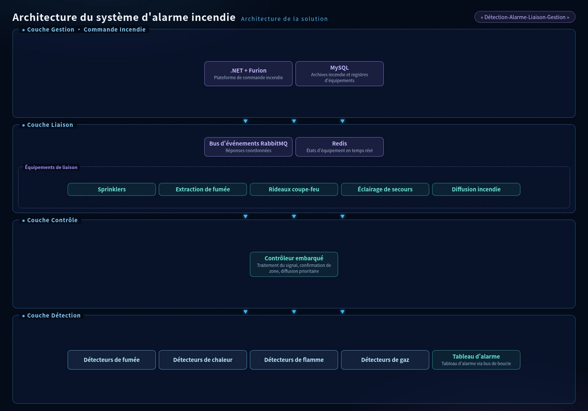

La solution d'alarme incendie d'AXLTeco fournit une détection précoce et un contrôle de liaison intelligent pour maximiser la sécurité du personnel et minimiser les pertes matérielles.
Architecture de la Solution

Le Système d'Alarme Incendie adopte une architecture distribuée à quatre couches « Détection-Alarme-Liaison-Gestion ». La couche détection connecte les détecteurs de fumée, chaleur, flamme et gaz au tableau d'alarme via des bus de boucle. La couche contrôle utilise des contrôleurs embarqués pour le traitement du signal, la confirmation de zone et la diffusion prioritaire. La couche liaison pilote les réponses coordonnées des sprinklers, extraction de fumée, rideaux coupe-feu, éclairage de secours et diffusion incendie via le bus d'événements RabbitMQ, avec Redis mettant en cache les états d'équipement en temps réel. La couche gestion construit une plateforme de commande incendie sur .NET + Furion, avec MySQL stockant les archives incendie des bâtiments et les registres d'équipements. les registres d'équipements, MongoDB stockant les images d'événements et les logs d'opérations. La console de gestion Vue 3 + Element Plus fournit une surveillance graphique, des plans électroniques, l'inspection à distance et la gestion unifiée incendie multi-tableau en réseau.
Composition de la Solution

Scénarios d'Application
Applicable aux bâtiments commerciaux, complexes résidentiels, usines industrielles, entrepôts, hôpitaux et écoles. Le système respecte les réglementations de sécurité incendie.
Avantages de la Solution
Détecteurs haute sensibilité pour alerte précoce ; algorithmes intelligents réduisant les fausses alarmes ; contrôle de liaison puissant ; surveillance réseau connectée aux plateformes municipales.
Valeur de la Solution
Détecter l'incendie et émettre des alarmes au plus tôt, gagnant un temps précieux pour l'évacuation. Lier automatiquement l'équipement de lutte contre l'incendie.
Pratique Projet
Conception, installation et mise en service de systèmes d'alarme incendie pour multiples complexes commerciaux et communautés résidentielles, tous ayant passé les inspections.